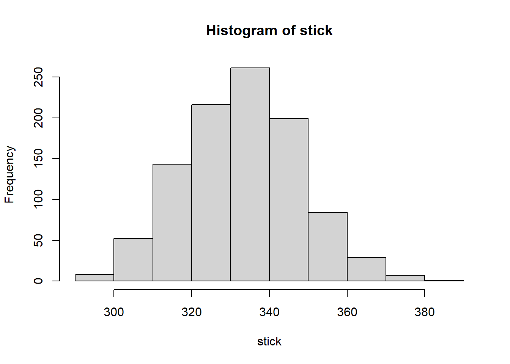

Simulations in the form of re-sampling methods provide a family of techniques for extracting information from data.
For example: we are given a data set with the results of eight tosses of a coin: six heads and two tails.
Given this data, would we say the coin is biased?
We can simulate tosses of a coin, for various degrees of imbalance, and then compare the simulation results to our data set.
library(ggplot2)
k = seq(0, 1, by = 0.05)
df <- data.frame(p = rep(k, each = 60),
head = unlist(lapply(k, function(x) rbinom(n = 60, size = 8, prob = x))))
ggplot(df, aes(x = p, y = head)) +
geom_point(position = "jitter", shape = 1, size = 2, alpha = .5) +
geom_hline(yintercept = 6, size = 1, linetype = "dashed", colour = "blue") +
geom_vline(xintercept = 0.5, size = 1, linetype = "dashed", colour = "blue") +
ggtitle("Simulating about toss of a coin") +
theme(plot.title = element_text(hjust = 0.5, size =rel(1.5), face = 'bold'))The figure is quite clear: for p = 0.5 (i.e., a balanced coin), it is pretty unlikely to obtain six or more heads, although not all impossible.
On the other hand, given that we have observed six heads, we would expect the parameter to fall into the range p = 0.6, …, 0.7.
The simulation therefore not only helped us understand the actual data set but also allowed us to explore the system that produced it.
Monte Carlo Simulations
Monty Hall Problem
The strategy “stick” wins 333 trials in 1000 trials, “choose” wins half the time, but “switch” amazingly wins in two thirds of all cases.
# Monty Hall Problem
choose_strategy <- function(strategy) {
wins <- 0
for (trial in 1 : 1000) {
# raw envelopes
envelopes <- c(0, 1, 2)
first_choice = sample(envelopes, size = 1)
# envelopes after deleter one empty envelope
if (first_choice == 0) {
envelopes <- c(0, sample(c(1, 2), size = 1))
} else {
envelopes <- c(0, first_choice)
}
if (strategy == 'stick') {
second_choice <- first_choice
} else {
if (strategy == "choose") {
second_choice <- sample(envelopes, size = 1)
} else {
if (strategy == "swith") {
second_choice <- envelopes[which(envelopes != first_choice)]
}
}
}
if (second_choice == 0) {
wins <- wins + 1
}
trial <- trial + 1
}
wins
}
choose_strategy(strategy = 'stick')## [1] 315choose_strategy(strategy = 'choose')## [1] 515choose_strategy(strategy = 'swith')## [1] 659stick <- c()
for (i in 1:1000) {
stick <- c(stick, choose_strategy(strategy = 'stick'))
i <- i + 1
}
hist(stick)
mean(stick)## [1] 333.382sd(stick)## [1] 14.8047choose <- c()
for (i in 1:1000) {
choose <- c(choose, choose_strategy(strategy = 'choose'))
i <- i + 1
}
hist(choose)mean(choose)## [1] 500.335sd(choose)## [1] 15.55451swith <- c()
for (i in 1:1000) {
swith <- c(swith, choose_strategy(strategy = 'swith'))
i <- i + 1
}
hist(swith)mean(swith)## [1] 666.784sd(swith)## [1] 14.58513Obtaining outcome distributions
We had a visitor population making visits to a certain website.
Because individual visitors can make repeat visits, the number of unique visitors grows more slowly than the number of total visitors.
We want to find an simulation for the number of unique visitors over time.
# visitors to visit a website
n <- 1000 # total visitors
k <- 100 # avg visitors per day
s <- 50 # daily variation
trial <- function() {
visitor_for_day <- c()
has_visited <- rep(0, n)
for (day in 1 : 31) {
visitors_today <- max(0, round(rnorm(n = 1, mean = k, sd = s)))
# pick the individuals who visited today and mark them
for (i in sample(1:n, size = visitors_today, replace = TRUE)) {
has_visited[i] <- 1
}
# find the total number of unique visitors so far
visitor_for_day <- c(visitor_for_day, sum(has_visited))
}
visitor_for_day
}
df <- data.frame(date = c(), visitor = c())
for (t in 1:25) {
r <- trial()
for (i in 1:length(r)) {
df <- rbind(df, data.frame(date = i, visitor = r[i]))
}
}
ggplot(df, aes(x = date, y = visitor)) +
geom_point(shape = 1) +
ggtitle("Simulating the visitors to visit a website") +
theme(plot.title = element_text(hjust = 0.5, size = rel(1.5), face = 'bold'))Re-sampling Method
The Bootstrap
What if we could draw additional samples from the population?
We can create additional samples (also of size n) by sampling with replacement from the original sample.
Here is an example :
We draw n = 25 points from a standard Gaussian distribution (with mean = 0 and standard deviation = 1).
To find the bootstrap estimate for the sample mean and its standard error, we draw 100 samples, each containing n = 25 points, from our original sample of 25 points.Points are drawn randomly with replacement.
Now we ask: what is the spread of the distribution of these 100 bootstrap means?
From the figure : at the bottom, we see the 25 points of the original data sample; above that, we see the means calculated from the 100 bootstrap samples.
# bootstrap
raw <- rnorm(25, mean = 0, sd = 1)
boot_mean <- c()
for (i in 1: 100) {
boot_mean <- c(boot_mean, mean(sample(raw, size = 25, replace = TRUE)))
}
ggplot(NULL, aes(x = raw)) +
# draw the raw data points
geom_point(aes(x = raw, y = sample(seq(-.2, -.1, length.out = 25))),
position = "jitter", shape = 22, fill = "green") +
ylim(-.3, .9) +
xlim(-3, 3) +
xlab("") +
ylab("") +
geom_hline(yintercept = 0, linetype = "dashed") +
# draw the density curve of the raw data
geom_line(stat = "density", colour = "green", size = 1.5, adjust = 1.2) +
# draw the normal distribution curve
geom_line(aes(x = seq(-3, 3, by = .1), y = dnorm(seq(-3, 3, by = .1))),
color = "red", linetype = "dashed", size = 1.5) +
# the bootstrap data points
geom_point(aes(x = boot_mean, y = sample(seq(0.1, .7, length.out = 100))),
shape = 21, fill = "blue", position = "jitter", size = 2) +
# the density curve of the boost means
geom_line(aes(x = boot_mean), stat = "density", adjust = 8,
colour = "blue", linetype = "dashed", size = 1.5) +
ggtitle("The bootstrap") +
theme(plot.title = element_text(hjust = 0.5, size = rel(1.5), face = 'bold'))When does bootstrapping work?
The original sample must provide a good representation of the entire population;
The estimated quantity must depend “smoothly” on the data points, which suggests that bootstrapping does not work well for quantities that depend critically on only a few data points. For example, we may want to estimate the maximum value of some distribution, the bootstrap is not suitable.
Referenced:
Welcome your advice and suggestion!
Just record, this article was posted at linkedin, and have 49 views to November 2021.